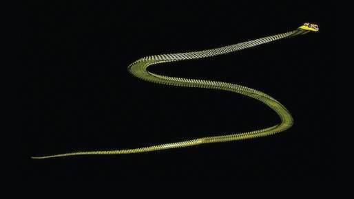
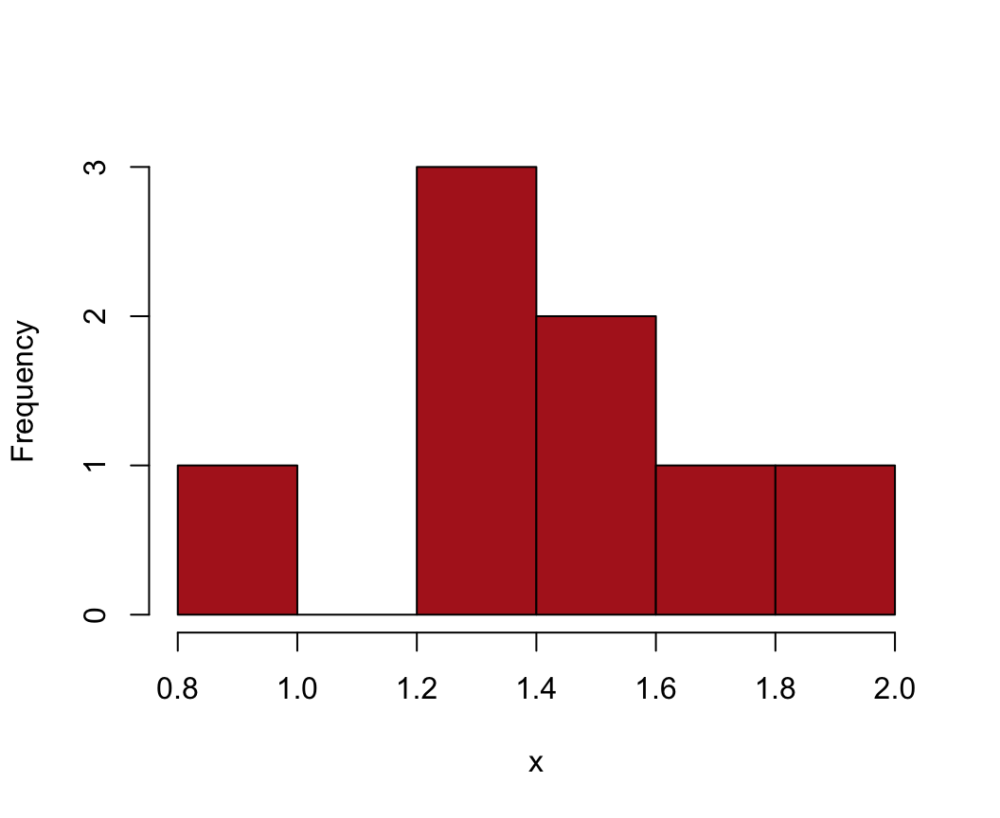
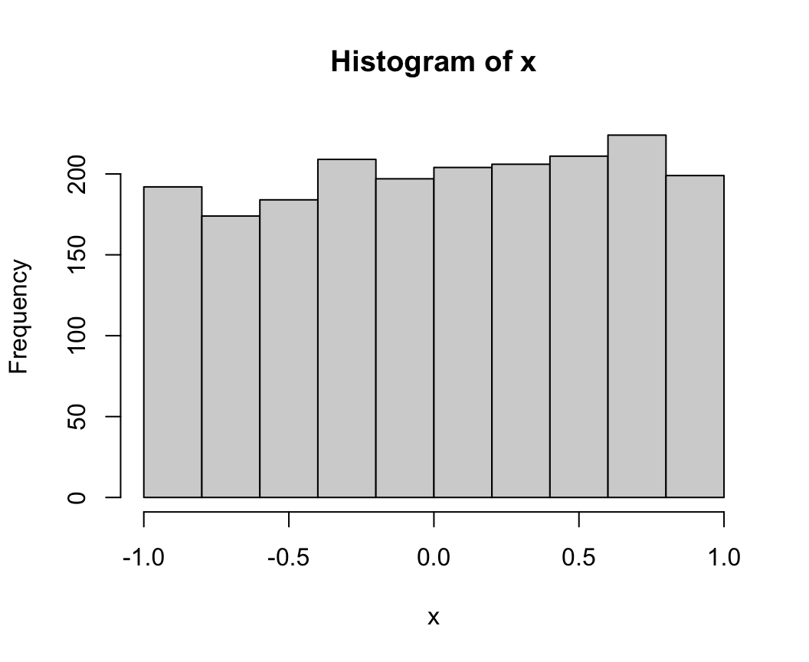
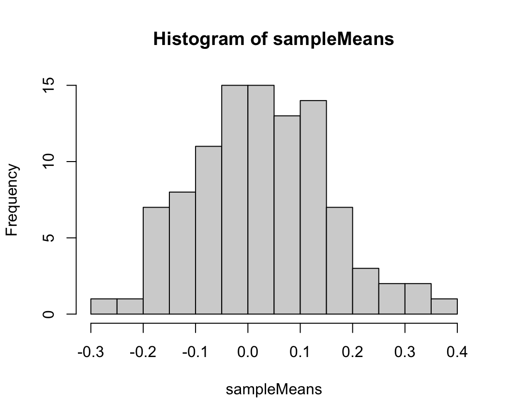

The goal of this first workshop is to start working in R, or referesh your memory of it, and to introduce the most commonly-used data types, operations, and functions.
The command line in the R console is where you interact with R.
At its most basic, the command line is a bloated calculator. The basic operations are
+ - * /for add, subtract, multiply, divide. Familiar calculator functions also work on the command line. For example, to take the natural log of 2, enter the following.
log(2)## [1] 0.6931472Try the calculator out to get a feel for this basic application
and the style of the output. Try log10() for log base 10,
and sqrt() and abs() for square root and
absolute value.
R allows you to store or assign numbers and character strings to
named variables called vectors, which are a type of “object” in R. For
example, to assign the number “3” to a variable x, use
x <- 3
The assign symbol is a “less than” symbol followed by a dash,
<-, with no space between. Try assigning a single number
to a named variable.
R can also assign character strings (enter using double quotes) to named variables. Try entering
z <- "Wake up Neo" # single or double quotes needed print(z)
At any time, enter ls() to see the names of all the
objects in the working R environment.
Assign a single number to the variable x and another
number to the variable y. Then watch what happens when you
type an operation, such as multiplication:
x * y
Finally, you can also store the result in a third variable.
z <- x * y
To print the contents of z, just enter the name on the
command line, or enter print(z).
The calculator will also give a TRUE or FALSE response to a logical operation. Try one or more variations of the following examples on the command line to see the outcome.
2 + 2 == 4 # Note double "==" for logical "is equal to" 3 <= 2 # less than or equal to "A" < "a" # greater than "Hi" != "hi" # not equal to (i.e., R is case sensitive)
Vectors in R are used to represent variables with one or more
elements. R can assign sets of numbers or character strings to named
variables using the c() command, for concatenate. (R treats
a single number or character string as a vector too, having just one
element.)
x <- c(1, 2, 333, 65, 45, -88)Assign a set of 10 numbers to a variable x. Make
sure it includes some positive and some negative numbers. To see the
contents afterward, enter x on the command line, or enter
print(x). Is it really a vector? Enter
is.vector(x) to confirm.
Use integers in square brackets to indicate subsets of vector
x.
x[5] # fifth element
Try this out. See also what happens when you enter vectors of indices,
x[1:3] # 1:3 is a shortcut for c(1,2,3) x[c(2, 4, 9)] # need c() if more than one index
Print the 3rd and 6th elements of x with a single
command.
Some functions of vectors yield integer results and so can be used as indices too. For example, enter the function
length(x)
Since the result is an integer, it is ok to use as follows
x[length(x)]
The beauty of this construction is that it will always give the last
element of a vector x no matter how many elements
x contains.
Logical operations can also be used as indices. First, enter the
following command and compare with the contents of x,
x < 0
Now enter
x[x < 0]
Try this yourself: show all elements of x that are
non-negative. The which() command will identify the
elements corresponding to TRUE. For example, try the following and
compare with your vector x.
which(x < 0)
Indicators can be used to change individual elements of the
vector x. For example, to change the fifth element of
x to 0,
x[5] <- 0
Try this. Change the last value of your x vector to a
different number. Change the 2nd, 6th, and 10th values of x
all to 3 new numbers with a single command.
Missing values in R are indicated by NA. Try
changing the 2nd value of x to a missing value. Print
x to see the result.
R can be used as a calculator for whole vectors of numbers too.
To see this, create a second numerical vector y of the same
length as x.
Now try out a few
ordinary mathematical operations on the whole vectors of numbers,
z <- x * y print(z)
z <- y - 2 * x print(z)
Examine the results to see how R behaves. It executes the operation
on the first elements of x and y, then on the
corresponding second elements, and so on. Each result is stored in the
corresponding element of z. Logical operations are the
same,
z <- x >= y # greater than or equal to print(z)
z <- x[abs(x) < abs(y)] # absolute values print(z)
What does R do if the two vectors are not the same length? The answer
is that the elements in the shorter vector are “recycled”, starting from
the beginning. This is basically what R does when you multiply a vector
by a single number. The single number is recycled, and so is applied to
each of the elements of x in turn. Otherwise this is hard
to control, however, and it is best to operate on vectors of the same
length.
z <- 2 * x print(z)
Use an operation to determine which elements of x
are smaller than the corresponding element in y. Optional:
Can you make a new vector that contains only the smaller of the two
numbers in x and y, element by
element?
Make a data frame called mydata from the two
vectors, x and y. Consult the R tips Calculate
and Data sets pages for help on how to do this. Print
mydata on the screen to view the result. If all looks good,
delete the vectors x and y from the R
environment. They are now stored only in the data frame. Type
names(mydata) to see the names of the stored
variables.
Vector functions applied to data frames may give unexpected
results – data frames are not vectors. For example,
length(mydata) won’t give you the same answer as
length(x) or length(y). But you can still
access each of the original vectors using mydata$x and
mydata$y. Try printing one of them. All the usual vector
functions and operations can be used on the variables in the data frame.
We’ll do more with data frames below.

Paradise tree snakes (Chrysopelea paradisi) leap into the air from trees, and by generating lift they glide downward and away rather than plummet. An airborn snake flattens its body everywhere except for the heart region. It forms a horizontal “S” shape and undulates from side to side. By orienting the head and anterior part of the body, a snake can change direction, reach a preferred landing site, and even chase aerial prey. To better understand lift and stability of glides, Socha (2002, Nature 418: 603-604) videotaped eight snakes leaping from a 10-m tower (video here). One measurement taken was the rate of side-to-side undulation. Undulation rates of the eight snakes, measured in Hertz (cycles per second), were as follows:
0.9 1.4 1.2 1.2 1.3 2.0 1.4 1.6We’ll store these data in a vector (variable) and try out some useful vector functions in R (review the common vector functions section on the Calculate page of the R tips web pages).
Put the glide undulation data above into a named vector. Afterward, check the number of observations stored in the vector.
Apply the hist() command to the vector and observe
the result (a histogram). Examine the histogram and you will see that it
counts two observations between 1.0 and 1.2. Are there any measurements
in the data between these two numbers? What is going on? The default in
R is to use right-closed, left-open intervals. To change to left-closed
right-open, modify an option in the hist() command as
follows,
hist(myvector, right = FALSE)
We’ll be doing more on graphs next week.
Hertz units measure undulations in cycles per second. The
standard international unit of angular velocity, however, is radians per
second. 1 Hertz is 2π radians per second. Transform the snake data so
that it is in units of radians per second (note: pi is a
programmed constant in R).
Using the transformed data hereafter, calculate the sample mean
undulation rate WITHOUT using the function mean() (i.e.,
use other functions instead)*.
Ok, try the function mean() and compare your
answer.
Calculate the sample standard deviation in undulation rate
WITHOUT using the functions sd() or var().
Then calculate using sd() to compare your
answer**.
Sort the observations using the sort()
command.
Calculate the median undulation rate. When there is an even number of observations (as in the present case), the population median is most simply estimated as the average of the two middle measurements in the sample.
Calculate the standard error of the mean undulation rate. Remember, the standard error of the mean is calculated as the standard deviation of the data divided by the square root of sample size.
* 8.63938.
** 2.035985
All lines below beginning with double hashes are R output
# 1. Input the data:
x <- c(0.9, 1.4, 1.2, 1.2, 1.3, 2.0, 1.4, 1.6)
# 2. Histogram
hist(x, right = FALSE, col = "firebrick", main = "")
# 3. Convert hertz to radians/sec
z <- x * 2*pi
z## [1] 5.654867 8.796459 7.539822 7.539822 8.168141 12.566371 8.796459
## [8] 10.053096# 4. Mean without using mean() function
sum(z)/length(z)## [1] 8.63938# 5. Using mean()
mean(z)## [1] 8.63938# 6. Standard deviation without sd() or var()
sqrt( sum( (z - mean(z))^2 )/( length(z) - 1) )## [1] 2.035985# 7. Compare with output of sd()
sd(z)## [1] 2.035985# 8. Median
median(z)## [1] 8.4823# 9. SE
sd(z)/sqrt(length(z))## [1] 0.7198293Missing data in R are indicated by NA. Many functions
for vectors, such as sum() and mean(), will
return a value of NA if the data vector you used contained
at least one missing value. Overcoming this usually involves modifying a
function option to instruct R to ignore the offending points before
doing the calculation. See the Calculate page of the R tips pages for
help on how to do this.
Use the c() function to add a single new measurement
to the snake vector created in the previous section (i.e., increase its
length by one) but have the new observation be missing, as though the
undulation rate measurement on a 9th snake was lost.
Check the length of this revised vector, according to R. The length should be 9, even though one of the elements of the vector is NA.
What is the sample mean of the measurements in the new vector, according to R? Use a method that does not involve you directly removing the offending point from the vector.
Recalculate the standard error of the mean, again leaving in the missing value in the vector. Did you get the same answer as in the previous section? If not, what do you think went wrong? Take great care when there are missing values.
Calculate the standard error properly, using the vector of 9 elements (i.e., the vector containing one NA). Use a method that will work on any vector containing missing values.
All lines below beginning with double hashes are R output
# 1. Add a missing observation
z <- c(z, NA)
# 2. Length
length(z)## [1] 9# 3. mean()
mean(z, na.rm = TRUE)## [1] 8.63938# 4. Oops, the following is not correct! length() includes the missing case
n <- length(z)
sd(z, na.rm = TRUE)/sqrt(n)## [1] 0.6786616# 5. Fix by excluding any missing value
# use: n <- length(z[!is.na(z)])
# or: n <- length(na.omit(z))
n <- length(na.omit(z))
sd(z, na.rm = TRUE)/sqrt(n)## [1] 0.7198293Here we will read data on several variables from a comma-delimited (.csv) text file into a data frame, which is the usual way to bring data into R. The data are all the known species of Anolis lizards on Caribbean islands, the named clades to which they belong, and the islands on which they occur. A subset of the species is also classified into “ecomorphs” clusters according to their morphology and perching habitat. Each ecomorph is a phylogenetically heterogeneous group of species having high ecological and morphological similarity. A measure of body size (snout-vent length, in mm) is included for a subset of species. The list was compiled by Jonathan Losos from various sources and are provided in the Afterword of his wonderful book (Losos 2009. Lizards in an evolutionary tree. University of California Press). The size data are from Mahler et al (2013) Science 341: 292-295.
Download the file anolis.csv (click file name to initiate download) and save in a convenient place.
Open a new script file to write and submit your commands (or cut and paste to the command window) for the remainder of this section.
Read the data from the file into a data frame (e.g., call it
mydata) using the read.csv() command. See the
R tips Data tab for help on this step. For this first attempt, include
no additional arguments or options for the read.csv()
command other than the file name so we can explore R’s
behavior.
Use the str() command to obtain a compact summary of
the contents of the data frame. Every variable shown should be a
character which is the default for character data. Some functions will
convert character data to factors, which is a special kind of character
variable whose categories also have a numerical interpretation (useful
when a specific order of categories is desired in a table or plot).
Another useful command is class(), which will tell you what
data type your object is. Try it out on a vector in your data frame, and
again on the whole data frame.
Use the head() command to inspect the variable names
and the first few rows of the data frame. Every variable in this data
set contains character strings. (Why, yes, there’s a tail()
command too!)
Let’s focus on the variable Ecomorph, since it has a
manageable number of categories. Use the table() function
on the Ecomorph vector to see the frequency (number of
rows, namely number of species) belonging to each named group.
Notice anything odd about the table? One ecomorph category is blank and has 47 species (rows). Another ecomorph, the Trunk-Crown, seems to be present twice with different numbers of species. Same for Trunk-ground. Do you notice the cause of the problem?
The answer is that one species belongs to the “Trunk-Crown” (trailing space) category rather than to the “Trunk-Crown” (no spaces) category, caused by a typo in the data file. Identify the row with the typo.
Using assignment (<-), fix the single typo. Make
a new frequency table to check the effect of your change. Note that
other Ecomorph categories still have the same problam.
Re-read the data from the file into R. This time, use options of
the read.csv() function in base R to strip leading and
trailing spaces from character string entries and treat empty fields as
missing rather than as words with no letters.
How will you ever remember such a list of options in future, when
it comes time to reading your own data into R? The answer is: you don’t
have to. I couldn’t possibly remember it myself. If you keep a script
file when you analyze the data you can always go back and consult it,
and copy it the next time you need it. Type ?read.csv in
the command line at any time to get a complete list of all the read
options and their effects. Try it now. Those options can be handy when
you need them.
Tabulate again the numbers of species in each Ecomorph category. Is there an improvement from the previous attempts? Which is the commonest Ecomorph and which is the rarest?
What happened to the missing values? Use table() but
include the useNA = “ifany” option in your command to
include a count of NA values in your output table (see the
R tips Display page on frequency tables to see examples of the use of
this argument). In this data set, NA refers to lizard
species that do not belong to a standard ecomorph category, so it is
worthwhile to include them in the table. Perhaps they should be given
their own named group (“none” or “unique”), which is less ambiguous than
NA.
How many Anolis species inhabit Jamaica exclusively?*
What is the total number of Anolis species on Cuba?** This is not the same as the number occurring exclusively on Cuba — a few species live there and also on other islands. Figure out a way in R to count the number of species that occur on Cuba. Bonus points for the briefest command! [Hint: check the vector functions for character data on the R tips Calculate page.]
What is the tally of species belonging to each ecomorph on the four largest Caribbean islands: Jamaica, Hispaniola, Puerto Rico and Cuba? Note: No species occurs on more than one large island, but some species that occur on a large island are also present on one or more smaller islands.***
What is the most frequent ecomorph for species that do not occur on the four largest islands?***
Save the cleaned up data frame in a new .csv file on
your laptop.
Body size data (snout-vent length, in mm) are included for a
subset of species in the variable SVLength. Using the
available measurements, calculate the mean and standard deviation of
body size of Anolis species.****
Which ecomorph is the largest on average, and which the smallest?***** To determine this, obtain the mean body size of the species in each ecomorph category. This can be accomplished in many ways, but try to use as few lines of code as possible. Consult the R tips Graphs and Tables page for hints.
* 6
** 63
*** Trunk-crown
**** 68.17814,
37.4241
***** Largest: Crown-giant; Smallest: Grass-bush
All lines below beginning with double hashes are R output
# Load libraries you might need
library(dplyr)
library(readr)
# 3. Read the data (this is a shortcut)
mydata <- read.csv(url("https://www.zoology.ubc.ca/~bio501/R/data/anolis.csv"))
# 4. See variable types
str(mydata)## 'data.frame': 154 obs. of 5 variables:
## $ Species : chr "Anolis brunneus" "Anolis fairchildi" "Anolis smaragdinus" "Anolis ernestwilliamsi" ...
## $ Island : chr "Bahamas" "Bahamas" "Bahamas" "Carrot Rock" ...
## $ Ecomorph : chr "Trunk-Crown" "Trunk-Crown" "Trunk-Crown" "Trunk-Ground" ...
## $ Series.Clade: chr "carolinensis" "carolinensis" "carolinensis" "cristatellus" ...
## $ SVLength : num NA NA NA NA 155 ...# dplyr command instead
glimpse(mydata)## Rows: 154
## Columns: 5
## $ Species <chr> "Anolis brunneus", "Anolis fairchildi", "Anolis smaragdin…
## $ Island <chr> "Bahamas", "Bahamas", "Bahamas", "Carrot Rock", "Cuba", "…
## $ Ecomorph <chr> "Trunk-Crown", "Trunk-Crown", "Trunk-Crown", "Trunk-Groun…
## $ Series.Clade <chr> "carolinensis", "carolinensis", "carolinensis", "cristate…
## $ SVLength <dbl> NA, NA, NA, NA, 154.90, 166.33, 164.20, 161.33, NA, 153.7…class(mydata$Island)## [1] "character"class(mydata)## [1] "data.frame"# 5. Head
head(mydata)## Species Island Ecomorph Series.Clade SVLength
## 1 Anolis brunneus Bahamas Trunk-Crown carolinensis NA
## 2 Anolis fairchildi Bahamas Trunk-Crown carolinensis NA
## 3 Anolis smaragdinus Bahamas Trunk-Crown carolinensis NA
## 4 Anolis ernestwilliamsi Carrot Rock Trunk-Ground cristatellus NA
## 5 Anolis baracoae Cuba Crown-Giant equestris 154.90
## 6 Anolis equestris Cuba Crown-Giant equestris 166.33tail(mydata)## Species Island Ecomorph Series.Clade SVLength
## 149 Anolis griseus Southern Lesser Antilles roquet NA
## 150 Anolis luciae Southern Lesser Antilles roquet NA
## 151 Anolis richardii Southern Lesser Antilles roquet NA
## 152 Anolis trinitatis Southern Lesser Antilles roquet NA
## 153 Anolis roquet Southern Lesser Antilles roquet NA
## 154 Anolis acutus St. Croix cristatellus NA# 6. frequency table of ecomorphs
table(mydata$Ecomorph)##
## Crown-Giant Crown-Giant Grass-Bush Trunk
## 47 11 1 25 7
## Trunk-Crown Trunk-Crown Trunk-Ground Trunk-Ground Twig
## 20 1 30 1 11# 8. Typo present
which(mydata$Ecomorph == "Trunk-Crown ")## [1] 118# 9. Repair
mydata$Ecomorph[mydata$Ecomorph == "Trunk-Crown "] <- "Trunk-Crown"
# Make frequency table again
table(mydata$Ecomorph)##
## Crown-Giant Crown-Giant Grass-Bush Trunk
## 47 11 1 25 7
## Trunk-Crown Trunk-Ground Trunk-Ground Twig
## 21 30 1 11# 10. Re-read data with options
mydata <- read.csv(url("https://www.zoology.ubc.ca/~bio501/R/data/anolis.csv"),
strip.white = TRUE, na.strings = c("NA",""), stringsAsFactors = FALSE)
# or use read_csv() function from readr package (not run)
# mydata <- read_csv(url("https://www.zoology.ubc.ca/~bio501/R/data/anolis.csv"))
# Variable types
str(mydata) # or use dplyr command "glimpse(mydata)"## 'data.frame': 154 obs. of 5 variables:
## $ Species : chr "Anolis brunneus" "Anolis fairchildi" "Anolis smaragdinus" "Anolis ernestwilliamsi" ...
## $ Island : chr "Bahamas" "Bahamas" "Bahamas" "Carrot Rock" ...
## $ Ecomorph : chr "Trunk-Crown" "Trunk-Crown" "Trunk-Crown" "Trunk-Ground" ...
## $ Series.Clade: chr "carolinensis" "carolinensis" "carolinensis" "cristatellus" ...
## $ SVLength : num NA NA NA NA 155 ...# 12. Number of species in each Ecomorph category
table(mydata$Ecomorph)##
## Crown-Giant Grass-Bush Trunk Trunk-Crown Trunk-Ground Twig
## 12 25 7 21 31 11# 13. Same, but include a tally of missing values too
# (missing here means the species doesn't fall into an ecomorph series)
table(mydata$Ecomorph, useNA = "ifany")##
## Crown-Giant Grass-Bush Trunk Trunk-Crown Trunk-Ground Twig
## 12 25 7 21 31 11
## <NA>
## 47# 14. How many Anolis species inhabit Jamaica exclusively?
length(mydata$Species[mydata$Island == "Jamaica"])## [1] 6# or: nrow(mydata[mydata$Island == "Jamaica",])
# or: nrow(filter(mydata, Island == "Jamaica"))
# 15. Total number of Anolis species on Cuba
# Use "grep" to find the species whose islands of occurrence include Cuba
# use: length(mydata$Species[grep("Cuba", mydata$Island)])
# or: length(grep("Cuba", mydata$Island))
# or: nrow(mydata[grep("Cuba", mydata$Island), ])
# or: nrow(filter(mydata, grepl("Cuba", Island)))
length(mydata$Species[grep("Cuba", mydata$Island)])## [1] 63# 16. What is the tally of species belonging to each ecomorph
# on the four largest Caribbean islands:
# Jamaica, Hispaniola, Puerto Rico and Cuba?
# One solution is to create a new variable indicating species occurrence on big islands
mydata$bigIsland <- rep(NA, nrow(mydata)) # create the new variable
mydata$bigIsland[grep("Cuba", mydata$Island)] <- "Cuba"
mydata$bigIsland[grep("Jamaica", mydata$Island)] <- "Jamaica"
mydata$bigIsland[grep("Hispaniola", mydata$Island)] <- "Hispaniola"
mydata$bigIsland[grep("Puerto Rico", mydata$Island)] <- "Puerto Rico"
# Finally:
table(mydata$bigIsland, mydata$Ecomorph)##
## Crown-Giant Grass-Bush Trunk Trunk-Crown Trunk-Ground Twig
## Cuba 6 15 1 7 14 5
## Hispaniola 3 7 6 4 9 4
## Jamaica 1 0 0 2 1 1
## Puerto Rico 2 3 0 2 3 1# A wrong way is tally ecomorphs on just the four big islands. This fails to
# include big-island species that are also found on smaller islands.
# z <- mydata[mydata$Island %in% c("Cuba", "Jamaica", "Hispaniola", "Puerto Rico"), ]
# table(z$Island, z$Ecomorph)
# 17. What is the most frequent ecomorph of species that do not occur
# on the four largest islands?
# One way is to make a new data frame that excludes large-island species
mydata2 <- mydata[!(mydata$bigIsland %in%
c("Cuba", "Jamaica", "Hispaniola", "Puerto Rico")), ]
table(mydata2$Ecomorph) # Trunk-Crown is the most frequent##
## Trunk-Crown Trunk-Ground
## 6 4# 18. Write the cleaned up data frame to a .csv file
write.csv(mydata, "anolis_cleaned.csv", row.names = FALSE)
# 19. Mean and SD of body size (SVLength) of all species.
mean(mydata$SVLength, na.rm = TRUE)## [1] 68.17814sd(mydata$SVLength, na.rm = TRUE)## [1] 37.4241# or: use dplyr's summarize function
# summarize(mydata, meanSVL = mean(SVLength, na.rm=TRUE), sdSVL = sd(SVLength, na.rm=TRUE))
# 20. Mean and SD of body size by ecomorph category
# A simple approach is to use a for loop as follows:
for(i in unique(mydata$Ecomorph)) {
cat(i, "\n")
print( mean(mydata$SVLength[mydata$Ecomorph == i], na.rm=TRUE) )
}## Trunk-Crown
## [1] 58.83769
## Trunk-Ground
## [1] 59.7476
## Crown-Giant
## [1] 151.66
## Grass-Bush
## [1] 40.87389
## Trunk
## [1] 49.072
## Twig
## [1] 49.371
## NA
## [1] NaN# But for bigger data sets a faster approach is to use a function with an implicit loop
# such as aggregate() or tapply() or summarize() from the dplyr package:
aggregate(SVLength ~ Ecomorph, data = mydata, FUN = mean, na.rm = TRUE)## Ecomorph SVLength
## 1 Crown-Giant 151.66000
## 2 Grass-Bush 40.87389
## 3 Trunk 49.07200
## 4 Trunk-Crown 58.83769
## 5 Trunk-Ground 59.74760
## 6 Twig 49.37100tapply(mydata$SVLength, INDEX = mydata$Ecomorph, FUN = mean, na.rm = TRUE)## Crown-Giant Grass-Bush Trunk Trunk-Crown Trunk-Ground Twig
## 151.66000 40.87389 49.07200 58.83769 59.74760 49.37100as.data.frame(summarize(group_by(mydata, Ecomorph), meanSVL = mean(SVLength, na.rm=TRUE)))## Ecomorph meanSVL
## 1 Crown-Giant 151.66000
## 2 Grass-Bush 40.87389
## 3 Trunk 49.07200
## 4 Trunk-Crown 58.83769
## 5 Trunk-Ground 59.74760
## 6 Twig 49.37100
## 7 <NA> 85.20625R is a great simulation tool because it can generate random numbers from a variety of statistical distributions. Here’s a couple of examples of commands to generate random numbers.
Generate \(n\) = 100 random numbers from a normal distribution with the following mean and sd (standard deviation).
rnorm(n = 100, mean = 10, sd = 2.5)Generate 10 random numbers from a uniform distribution with the following lower and upper limits.
runif(n = 10, min = -1, max = 1)
Generate a vector of 20 random uniform numbers.
Repeat the operation in (1). Compare the two sets of numbers. Probably they are different.
Computer-generated random numbers are only pseudo-random,
however, generated by an algorithm called a random number generator. You
can control the starting point using set.seed(). Set the
seed to a haphazard integer and repeat step (1).
Set the seed again and to the same integer that you used in (3).
Now repeat the operation in step 1. Compare the numbers you got with
those in (3). The seed() command is a way to achieve
reproducibility in simulation studies.
What would the distribution of sample means look like if we repeatedly took samples from the same population? We can use R to answer this question. Let’s imagine a variable in hypothetical population having a uniform distribution, ie a “flat” distribution between a specified minimum and maximum value.
Obtain a random sample of 20 numbers from a uniform distribution
(you decide the minimum and maximum value). Repeat this operation 100
times and store the results into columns of a data frame or matrix. (One
way to do this is to generate a single vector of 2000 random numbers and
then use the matrix() command to reshape it into a matrix
with 20 rows and 100 columns. You can convert to a data frame or leave
it as a matrix.) Use the dim() command to confirm the
dimensions of your data frame or matrix.
Generate a histogram of your 2000 numbers. Does it look uniform (flat)?
Obtain the sample mean of every column of numbers. Help on how to obtain row & column statistics is on the R tips page for Graphs and Tables. The same command works for matrices as for data frames.
Plot a histogram of the sample means obtained in (7). Describe the shape of the frequency distribution. How does it differ from the previous one you generated? This is the so-called sampling distribution of means.
What famous Theorem says that the distribution of sample means should approach a normal distribution as sample size increases, if the data themselves are sampled from a non-normal distribution?
# 1. Generate n = 20 random numbers from a uniform distribution with specified minimum and maximum value.
x <- runif(n = 20, min = -1, max = 1)
x## [1] 0.218252843 0.410294503 -0.921552650 0.838273404 -0.920775116
## [6] -0.503115936 0.191900565 -0.361433081 -0.183063391 -0.433025961
## [11] -0.838754793 -0.550755665 -0.295701391 0.652906618 -0.593149258
## [16] 0.196178880 0.631025124 -0.005330067 -0.631700105 0.310913588# 2. Repeat the operation in (1)
y <- runif(n = 20, min = -1, max = 1)
y## [1] -0.43007824 -0.23365794 0.93355023 -0.09406199 -0.20657595 0.82565340
## [7] -0.43594393 -0.35927114 0.54418885 0.55939458 0.42255627 0.96286691
## [13] -0.68925509 0.29508554 -0.06113868 -0.20441154 -0.05889278 -0.91565132
## [19] 0.91289080 0.94040409# 3. Set seed
set.seed(12345)
x <- runif(n = 20, min = -1, max = 1)
x## [1] 0.44180779 0.75154639 0.52196466 0.77224913 -0.08703808 -0.66725643
## [7] -0.34980923 0.01844867 0.45541051 0.97947388 -0.93092913 -0.69525302
## [13] 0.47136990 -0.99772683 -0.21759333 -0.07501069 -0.22371204 -0.19502972
## [19] -0.64207283 0.90331751# 4. Repeat the operation in (3)
set.seed(12345)
x <- runif(n = 20, min = -1, max = 1)
x## [1] 0.44180779 0.75154639 0.52196466 0.77224913 -0.08703808 -0.66725643
## [7] -0.34980923 0.01844867 0.45541051 0.97947388 -0.93092913 -0.69525302
## [13] 0.47136990 -0.99772683 -0.21759333 -0.07501069 -0.22371204 -0.19502972
## [19] -0.64207283 0.90331751# 5. Generate n = 2000 random numbers from a uniform distribution
x <- runif(n = 2000, min = -1, max = 1)
x1 <- matrix(x, ncol = 100)
dim(x1)## [1] 20 100# 6. Histogram
hist(x, right = FALSE)
# 7. Column means
sampleMeans <- colMeans(x1)
# 8. Histogram of sample means - note bell shape
hist(sampleMeans, right = FALSE, breaks = 10)
# 9. What Theorem?
print("Central Limit Theorem")## [1] "Central Limit Theorem"© 2009-2026 Dolph Schluter